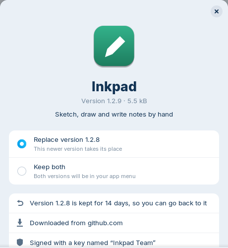
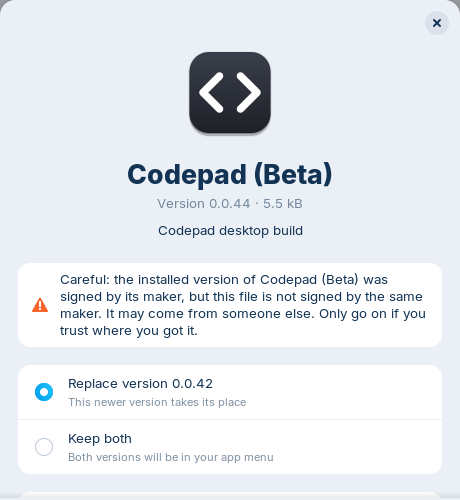

Know where your apps come from
See the website a file came from and who signed it. If a new version isn't signed by the same maker, you get a clear warning first.

All good“Signed by the same maker as the installed version.”

CarefulNot signed by the same maker? You're warned before anything happens.